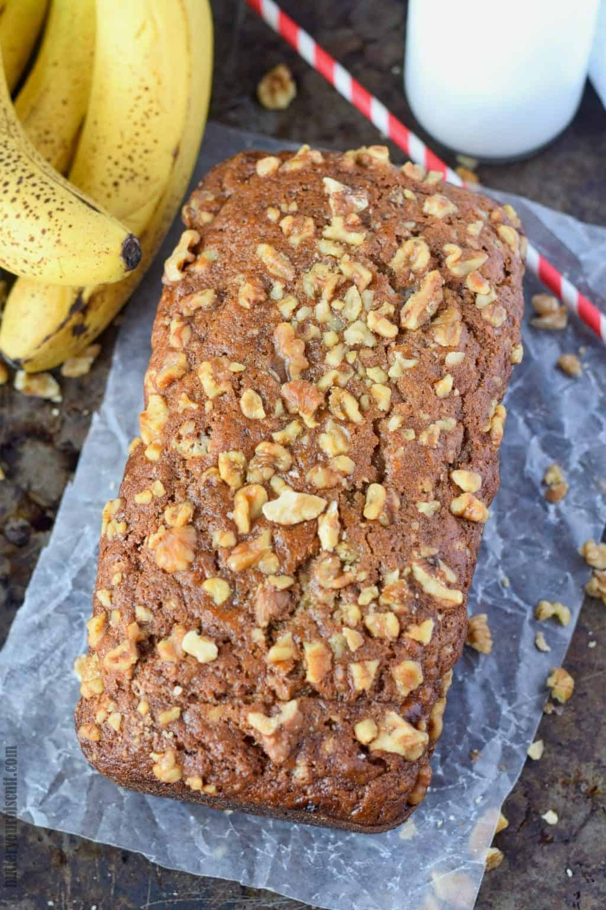

Banana Bread

Banana bread recipe based on Starbucks banana bread. Contains walnuts. Uses basic baking ingredients that most will have around the house.
Ingredients
- 2 cups all purpose flour
- 1 tsp baking soda
- 1/4 tsp salt
- 1 egg
- 1 & 1/8 cup sugar
- 1/2 cup vegetable oil
- 2 tbsp buttermilk
- 1 tsp vanilla
- 3 rotten bananas (not too rotten)
- walnuts to taste for bread batter and topping
Cooking Instructions
- Preheat oven to 325 degrees. Grease loaf pan.
- Mash the bananas and set aside for now.
- In a medium bowl add flour, baking soda, salt. Whisk until combined.
- In another medium bowl, add egg, sugar, oil. Whisk until combined.
- Add the dry ingredients to the wet ingredients and mix well. The mixture will be thick and dry at this point.
- Add in the buttermilk, vanilla, and mashed bananas. Add walnuts as desired. Mix until combined.
- Pour into loaf pan and sprinkle walnuts on top to taste.
- Bake on center oven rack for 60-75 minutes or until a knife comes out clean from the center.